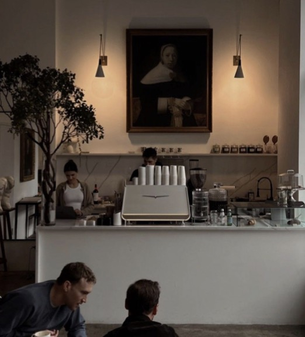

AI customer intelligence for independent cafés
Find why your cafe customers leave and win them back.
Sero pinpoints where you’re losing money in the customer experience journey, reveals revenue risk, and drives growth.

Customers don’t complain. They just stop coming.
Most cafés only find out why a customer stopped coming when they read a bad review, if they find out at all.
Sales, reviews and loyalty data live in different apps that don’t talk to each other.
Blanket discounts give money away to people who would have come in anyway.
Sero doesn’t just manage your cafe, it grows it.
6 modules in 1 platform. Each one solves a problem independent cafés face, and they all feed the same dashboard.
From scattered signals to clear next steps.
- 1
Connect
Bring in your reviews, till sales and loyalty members. Sero reads them together, not in separate tabs.
- 2
Understand
Sero ranks the reasons guests don’t come back and shows how much revenue each one puts at risk.
- 3
Act
Switch on a targeted offer, reward a drifting regular or reply to a review in one tap, then watch the numbers move.
All your cafe data. One dashboard. Zero blind spots.
AI-built for independent cafés, turning scattered customer signals into revenue you can actually see. Click around: everything below works.
Demo with sample data for a fictional café.
Questions, answered.
Who is Sero for?
Independent cafés and small café groups who want to understand their guests without hiring an analyst.
Do I need to replace my till or loyalty app?
No. Sero sits on top of the tools you already use and brings their data into one dashboard.
Where does the customer data come from?
Your reviews, visit patterns, sales and feedback. Sero reads them together to find why guests don’t come back.
Can I edit the AI review replies?
Always. Sero drafts a reply in the tone you pick (Warm, Professional or Short), and nothing is posted until you approve it.
See Sero with your café’s data.
Book a 20-minute demo. We’ll show you where your customers drop off and what to do about it.